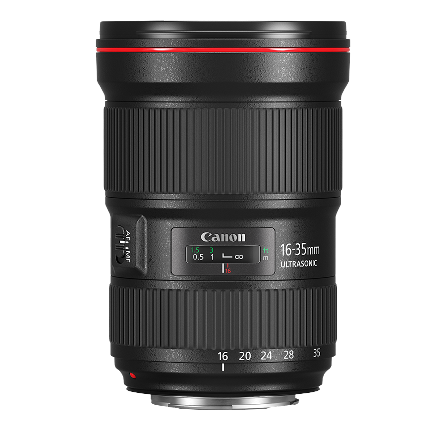
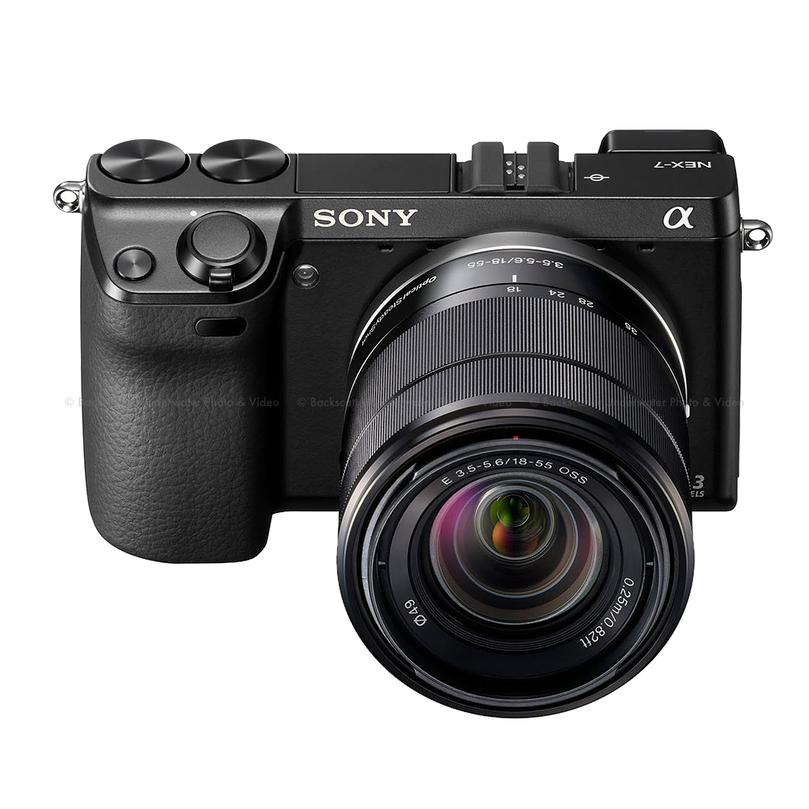
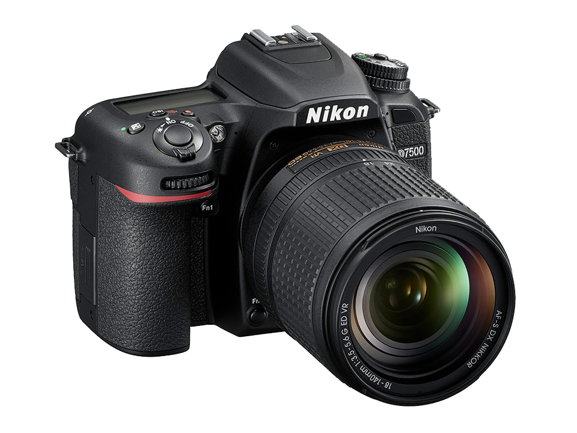

Built for speed, sensitivity, and precision, the Canon EOS-1D X Mark III is a powerful DSLR designed for sports, wildlife, and other trying and dynamic imaging applications. Designed as the flagship of the EOS system, the 1D X Mark III is characterized by its refined processing capabilities and distinct
speed to suit both photo and video applications. Featuring a newly
Canon 16-35mm lence kit

Characterized by a revamped optical design, the EF 16-35mm f/2.8L III USM from Canon is a workhorse wide-angle zoom and member of the well-regarded L-series of lenses. Featuring a series of specialized elements, this lens utilizes a trio of aspherical elements and two ultra-low dispersion glass elements to control a variety of aberrations for high sharpness and clarity. Both SWC and ASC coatings have also been applied to the elements in order to reduce lens flare and ghosting for increased contrast and color accuracy.
Sony Alpha a7 III Mirrorless Digital Camera

Distinguished by its updated sensor design, the Alpha a7 III Mirrorless Digital Camera from Sony is a well-rounded camera suitable for both photo and video applications in a variety of working situations. Refined for improved speed and low-light performance, the full-frame 24.2MP Exmor R BSI CMOS sensor and BIONZ X image processor pair to realize an impressive 10 fps continuous shooting rate and improved autofocus performance for faster, more reliable subject tracking along with wide frame coverage.
Nikon D7500 DSLR Camera

Designed as a true all-rounder, the Nikon D7500 is a DX-format DSLR offering a versatile feature-set to appeal to photographers and videographers alike. Based on a 20.9MP CMOS sensor and EXPEED 5 image processor, this multimedia maven avails an 8 fps continuous shooting rate for up to 100 consecutive JPEGS, a native sensitivity